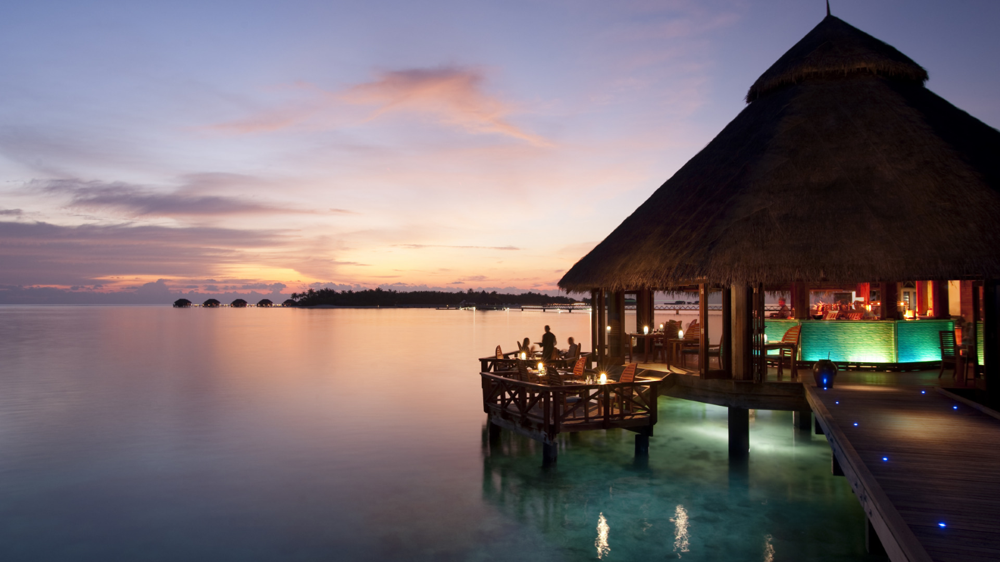

South Palm Resort Maldives is a place of unprecedented serenity, privacy and comfort. The southern tip of Maldives, Addu is one of the most untouched and interesting atolls in Maldives. With astonishing marine life, all-year round Manta Ray and Dolphin sightings, fascinating colonial history, and a spectacular southern hemisphere setting.
The atoll, with the 30 unique dive sites all within 10 minutes reach of South Palm Resort Maldives, is a popular destination.
South Palm Resort Maldives is the host of the distinguished Kurumba Spa, which features the exclusive floating spa rooms, the only one of its kind in Maldives.
Surrounded by white sandy beaches with a clear lagoon, and tranquil blue ocean views of
Addu Atoll.Located on a private Island at the remote, southern tip of Maldives, South Palm
Resort Maldives is a million miles from the stresses and strains of everyday life.
Stylish accommodation options at South Palm Resort Maldives offer a choice of 6 Villa categories
in anticipation of all your holiday needs.The island has a wealth of activities, superb facilities and the Kurumba Spa boasts the first ever floating spa rooms in Maldives, possibly the world. Making this an ideal hideaway for couples and honeymooners, or a fun-filled family destination.
->A choice of 100 Beach-front Villas and 30 Over-water Villas provide shelter for people of all walks of life
->Banyan Restaurant, Moodhu Bar, Kanduolhi Bar, and Various Special Dining options provide a wide variety of choices .
->5-Star PADI certified Dive Center, Watersports, Excursions, and experience the first ever floating Spa rooms at Kurumba Spa.
->Enjoy the complimentary lounge on arrival and fly across the equator to the southern-most atoll of Addu

Travel safe during COVID-19
What can you expect during your stay